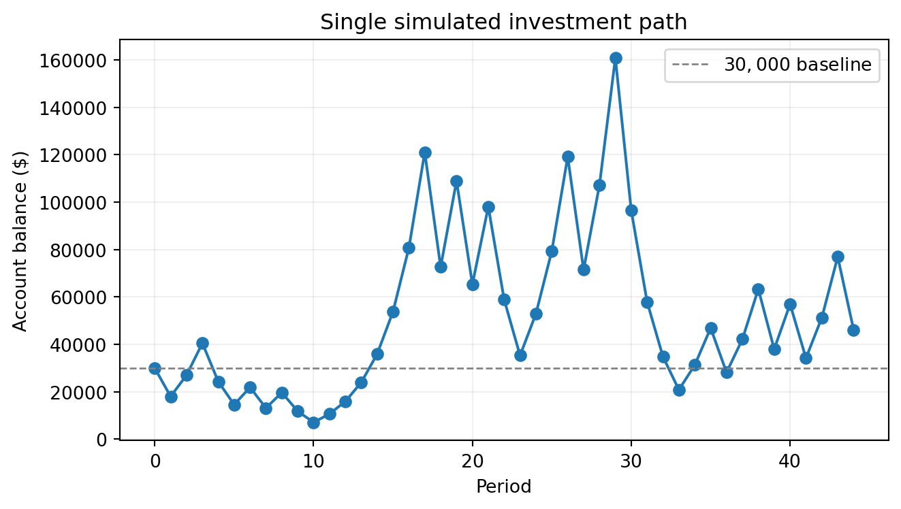

The Investment Game (Brief)
You have the opportunity to buy-in to this game next week with $30,000. Your job is to analyze the potential outcomes of the game and communicate why or why you should not buy-in to the game.
Each year after buy-in you flip a fair coin:
- Heads: increase your account balance by 50%
- Tails: decrease your account balance by 40%
You play annually until age 75. Your mission is to analyze outcomes and communicate insights clearly.
Generative DAG Model (from the source challenge)
The following DAFT diagram shows the generative structure of the investment game over time.
1) Expected Value After 1 Flip
One flip has a 50% chance to go up by 50% and a 50% chance to go down by 40%. On average, that makes your money 1.05× bigger after one flip: $31,500 from $30,000 (a 5% gain). This looks good on average, but it doesn’t show how risky the path can be.
EV after one flip: $31,500
Gain vs buy-in: $1,500 (5.0%)
Interpretation: EV rises by 5%, so on expectation this is favorable.2) Single Simulation Over Time (Narrative + Plot)
One example run (seed = 42) over 44 years (from age 31 to 75) shows a bumpy ride. Even though the average return is positive, a few tails in a row can push the balance well below $30,000, while a few heads in a row can make it jump. Overall the amount of return is not enough to justify the investment.

3) 100 Simulations: Distribution of Final Balances
Across 100 runs (seed = 123) over 44 years, results are spread out and skewed: a few very big wins pull up the average, while the middle outcome (median) is lower. That means most typical paths don’t hit the average. The printed mean, median, and P(final > $30,000) right below the plot are the exact numbers this text refers to.
Mean final balance: $148,345
Median final balance: $2,954
P(final > $30,000): 0.2404) Probability Balance > $30,000 at Age 75 (Original Game)
P(final > $30,000): 0.240Interpretation: This number is the chance you end with more than $30,000 if you fully risk the balance each year over the same 44-year horizon. It reuses the same 100 simulations as above when available (seed = 123). Even if the average looks good, this chance can be below 50%, showing that the typical experience can differ from the average.
5) Modified Strategy (Bet Exactly 50% Each Round)
Original — mean: $100,410, median: $2,954, P(> $30k): 0.200
Modified (f=25%) — mean: $52,393, median: $44,357, P(> $30k): 0.720Comparison: With seed = 2025 and f = 25% over 44 years, the modified plan tones down the swings each year. You usually get fewer deep losses and a higher chance of ending above $30,000, though you give up some of the biggest possible wins. The printed mean, median, and probabilities above are the exact values for this run. It’s a trade‑off: smoother ride vs. maximum upside.
6) Briefly Explain Your Findings From The Previous Step in Light of A Concept Known as the “Kelly Criterion”
The Kelly Criterion is a rule of thumb for how much to bet to grow your money fastest over the long run. For this game, the Kelly fraction is 25%. Betting 25% each year usually gives better typical results (and fewer huge drops) than betting the whole balance. In the code, set fraction_bet = 0.25 to use Kelly; using 0.5 is an over‑bet here and tends to add risk and reduce long‑run growth.